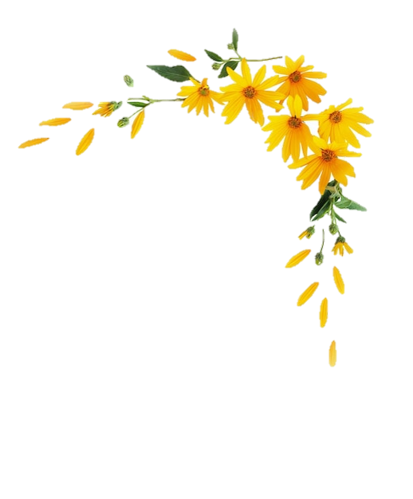
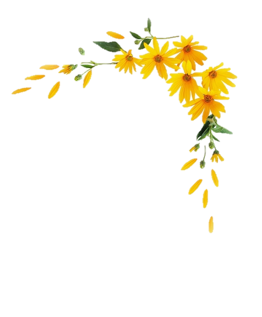

Hoy te traigo estas flores,
las que en mi corazón crecieron,
las que tanto tiempo esperaron
a encontrarse en tus manos, al fin.
Sé que las has soñado,
que en tus ojos ya las habías visto,
y aunque tardaron en llegar,
cada pétalo es un "te amo" que jamás se rindió.
En cada flor va un suspiro,
una promesa que florece,
y aunque el tiempo haya pasado,
este ramo siempre fue tuyo, desde el primer día.
Perdona la espera, mi amor,
porque estas flores son más que un regalo,
son el reflejo de lo que eres para mí:
la belleza que siempre me acompaña,
el jardín que nunca dejé de cuidar.
Hoy al fin te las doy,
con todo el amor que ya conoces,
porque en cada pétalo,
vuelvo a prometerte: "Siempre seré tuyo."
Te amo mucho mi niña hermosa 💖, lamento que no fueran flores reales :(
Que la vida siempre brille para ti princesa te adoro 💕🌻